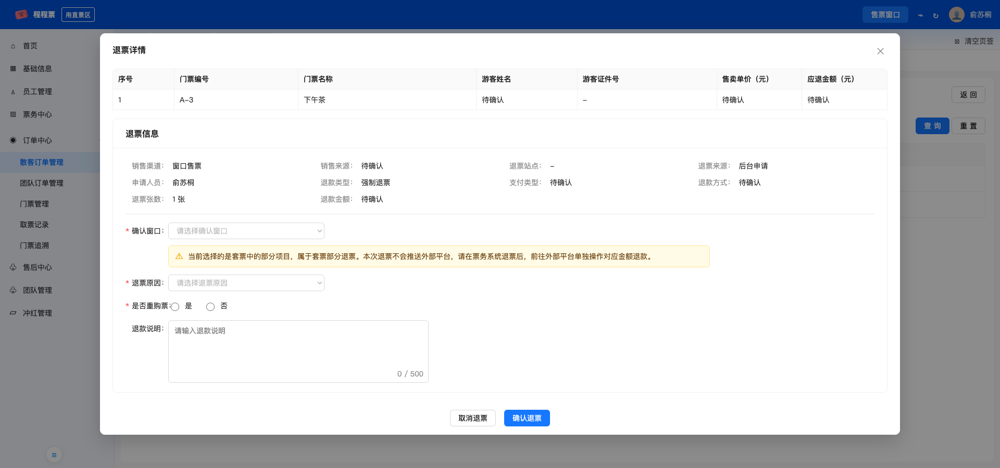
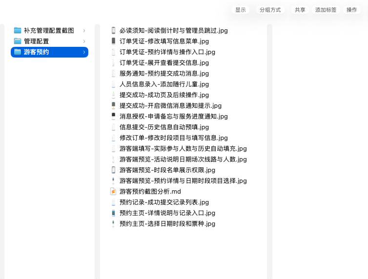

部门内 AI 应用分享
我怎么和 AI
一起做需求
三类票务需求，三种不同的协作方式
先判断：开始做需求时，我们手里已经有什么
已有信息不同，
和AI协作的方法也不同
方向基本明确
我熟悉系统，也知道为什么改、准备怎么改。
我定方向，AI补完整没有成熟答案
逻辑多、关联深，字段和规则无法一次想全。
用原型和实操推演已有成熟竞品
有经过真实使用验证的通用流程和业务逻辑。
竞品作底稿，逐步共创场景一｜适用：范围小、改法相对明确
我定方向，AI把需求补完整
我更清楚
为什么改、改哪里
现有系统、问题背景、修改方向和本期边界。
AI更适合展开
规则有没有补全
异常分支、提示、按钮状态、局部原型和验收条件。
日常迭代
我先把方向和边界说清楚
步骤2｜补全细节，并总结方法
AI把一个改动，
补成完整需求

方法总结：说明问题与现状 → 明确改法和边界 → AI补规则与异常 → 局部原型 → 验收标准
场景二｜适用：逻辑多、跨模块、没有成熟答案
先让业务在原型里跑起来，
再沉淀完整方案
细节多、关联深，单靠脑内推演很难一次列全。
把抽象逻辑变成真实操作，让遗漏和冲突更早出现。
定制化复杂大需求
先把方案全想完，
反而更难
“字段还没定，记账逻辑已经跨了八九个页面。”
靠脑内推演，很难一次列全；写完再画页面，往往还要大改。
步骤1｜先建立系统上下文
我来圈定范围，
让AI学习现有系统
例如团队管理、分销管理、售票窗口、订单详情等。范围由我来圈定，避免AI无目标地理解整个系统。
目的是让AI建立系统上下文、理解可参考架构；是学习，不是照搬。
步骤2｜先搭业务骨架
先定真实用户操作主线，
不急着列完所有字段
步骤3｜逐模块制作可操作原型
一个页面一个页面，
把业务跑起来
谁操作？从哪进？要完成什么？字段够不够？不同状态怎么变？会影响哪些下游页面？
原型不是最后的展示图，而是用来发现需求的业务模拟器。
步骤4｜在原型上实操，暴露遗漏细节
不只看页面，
要自己完整操作一遍
输入是否够用、状态是否正确、数据是否流转、关联页面是否同步、结果能否继续查询。
例子说明：一个操作真正跑通，才能确认这条业务链已经闭环。
步骤5｜原型、实操和样例数据反推方案调整
原型暴露的变化，
会反向推动方案修改
推动入口、布局、操作顺序和交互方案调整。
推动数据结构、业务规则和记录内容调整。
推动主流程、异常分支和提示规则调整。
推动模块范围、关联关系和验收标准调整。
场景三｜适用：复杂大需求，但已有成熟竞品
把竞品变成需求底稿，
再逐步共创自己的方案
经过实际使用验证的通用流程、功能结构和常见规则。
哪些适合自己的业务，哪些需要调整、删减或重新设计。
为什么采用另一条起步路径
复杂度没有降低，
只是不用从零构建业务骨架
共同点
都不可能一次想全
业务链路长、参与角色多、状态与规则相互影响，都需要逐步讨论和验证。
边讨论、边验证、边补全
场景三的优势
已有成熟产品可参考
通用流程和行业逻辑已经真实运行过，可以先借来建立完整认知。
不是照搬的最终答案
第一步：先确定怎样沟通
先让AI给采集建议，
再按建议准备竞品资料
根据分析目标，先列出采集方式、所需范围和防遗漏检查清单。
视频帮助理解连续操作；截图便于逐字段、逐状态分析和引用。
管理端配置与游客端结果必须成对采集，不能只看其中一端。
弹窗、展开项、错误提示、空状态、成功结果和修改取消过程。
第二步：整理竞品证据
从“一堆截图”变成
可查询、可追溯的资料库

第三步：恢复竞品背后的业务
先看懂它为什么这样做，
再讨论我们要不要这样做
创建活动 → 配置日期场次 → 游客预约 → 修改取消 → 名单管理。
管理端每一项配置，会怎样影响游客端展示、限制和结果。
日期、库存、填写项、开放截止、凭证、异常状态等完整能力版图。
区分截图已证明、多图推断，以及仍需继续验证的内容。
一次真正影响方法的踩坑
资料很多，不等于需求不会漏
当时的做法
看到一张截图就聊一张
想到一个问题就插入讨论
局部页面越来越细
没有统一的推进顺序
暴露的问题
完整功能和状态容易遗漏
前后台关系没有串起来
讨论内容重复或跳跃
不知道整体进度和下一步
第四步：先把需求讨论变成一个有顺序的项目
先用方案确认清单防止遗漏，
不是马上开始画页面
知道有哪些模块、相互怎样关联，以及哪些内容本期要做。
每次只讨论清单中的一个模块，完成后留下明确结论。
已确认、待确认、需补证据的问题都能看见。
方案确认清单与后面的HTML页面制作清单是两件事。
第五步：固定每次讨论的确认模板
每个功能都要对着竞品证据，
再做我们自己的判断
本模块涉及哪些截图；细到字段时，也展示字段所在页面。
它解决了什么真实操作问题，前后步骤怎样衔接。
哪些保留、哪些调整、哪些不做，以及放到我们系统的哪里。
前后台映射、正常状态、异常状态、空状态和最终结论。
第六步：从方案阶段进入原型阶段
先定整体方案，
再另列原型清单逐页制作
前半段
方案确认清单
保证业务模块、逻辑、关联关系和范围不漏。
以及清晰的功能结论
后半段
HTML原型清单
按真实用户流程确定要做哪些页面，以及制作先后顺序。
以及被验证过的细节
最后一步｜原型验证，并总结完整方法
竞品作需求底稿，
逐模块共创自己的方案
提供真实运行过的业务骨架，帮助我们避免从零遗漏通用逻辑。
加入样例并实际操作，验证这些逻辑落到自己的系统后是否真正可用。
可以直接复用